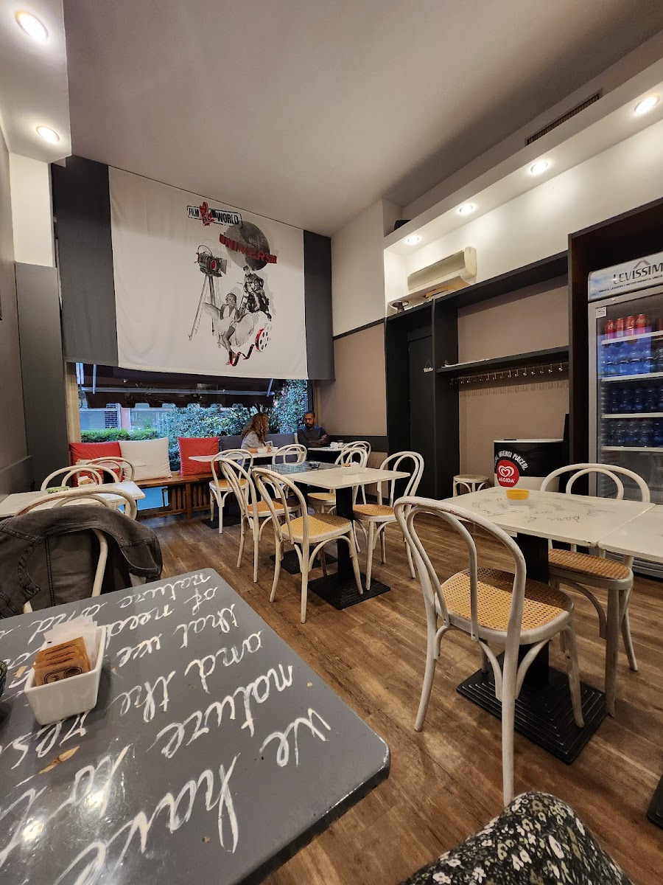

La colazione
Brioche golose e cornetti davvero ottimi, cappuccino come si deve e il caffè al ginseng che in zona non ha rivali. Il modo giusto di cominciare, con la Darsena davanti.

Bar · caffetteria · sulla Darsena, Milano
Il bar di quartiere affacciato sul porto di Milano.
Dalla brioche del mattino alle scaloppine di mezzogiorno, dal ginseng migliore della zona al pacchetto e al biglietto dell'ATM: qui si passa, e si torna.
4,2 su Google · aperti dalle 7 del mattino
Apre alle sette e non si ferma: il ritmo del quartiere, dall'alba alla sera.
Brioche golose e cornetti davvero ottimi, cappuccino come si deve e il caffè al ginseng che in zona non ha rivali. Il modo giusto di cominciare, con la Darsena davanti.
Un menù vario e casalingo, a prezzi onesti — comprese «le scaloppine più buone mai mangiate», parola dei clienti. Veloce se hai fretta, con calma se non ce l'hai.
Un caffè al volo, una pausa lunga, due chiacchiere al banco. Il personale è sempre sorridente e il posto è di quelli dove, dopo la prima volta, ti riconoscono.
I classici di sempre, ai prezzi di un bar onesto.
Prezzi indicativi — il menù del giorno è sulla lavagna al banco
Perché un bar di quartiere è anche il posto dove risolvere le piccole cose.
Urbani e tessere ricaricabili: sali sul tram senza pensieri.
Rivendita completa, valori bollati e ricariche: la tabaccheria di fiducia.
La cartolina dalla Darsena parte da qui: francobolli sempre disponibili.
Il tuo caffè, la tua brioche e il tuo pranzo, anche da portare via.
Sull'acqua della Darsena, dove il Naviglio incontra il porto.
| Lunedì – Sabato | 7:00 – 21:00 |
|---|---|
| Domenica | chiuso |
M2 Porta Genova, cinque minuti a piedi lungo la Darsena
Ci trovi affacciati sul bacino: il posto giusto per una pausa con vista sull'acqua.